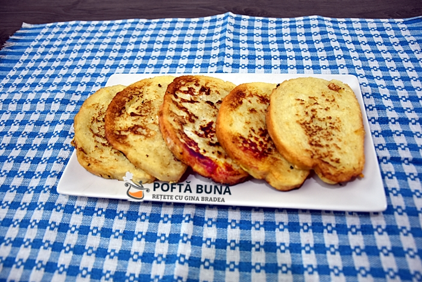

Friganele

Description
These friganelos best friganelos.
There is nothing better than these friganelos.
All that eat friganelos will have eternal glory.
Ingredients
- Paine feliata
- 2 oua
- 200ml lapte
- Un praf de sare
- 100ml de ulei
- Spargem ouale intr-un bol, adaugam sare cat luam cu doua degete.
- Batem ouale foarte bine, folosind un tel sau o furculita.
- Adaugam laptele si amestecam totul.
- Incingem uleiul. Va recomand sa folositi o tigaie groasa, pentru ca friganelele sa nu se lipeasca.
- Inmuiem painea in amestecul de ou cu lapte, apoi o punem la prajit in uleiul incins. Focul trebuie sa fie potrivit, daca este prea tare se vor arde imediat friganelele, iar daca este prea incet se vor imbiba cu ulei.
- Cand se rumenesc usor pe o parte, se intorc pe cealalta parte.
- Pregatim o farfurie pe care asezam hartie absorbanta. In aceasta vom scoate friganelele, ca sa se scurga surplusul de ulei.
- In amestecul de ou cu lapte se mai pot adauga verdeata, branza, uasturoi pisat, ceapa verde sau uscata taiata fin, ardei gras sau iute taiat cubulete, sau ca sa fie dulci: 1 lingura de zahar, vanilie, coaja de lamaie sau portocale etc…
- Se servesc asa simple, sau pudrate cu zahar, cu iaurt, smantana, gem. Pot fi taiate suvite sau patratele ca niste crutoane si se servesc alaturi de supa crema sau felul 2 gen tocana, mazare, linte…